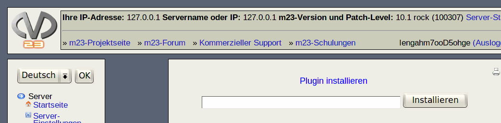

Nächste Seite:
The GNU General Public
Aufwärts:
m23-Erweiterungen: Plugins
Vorherige Seite:
Plugin-Überblick
Inhalt
Plugin installieren
Geben Sie den Pfad zu der m23-Plugin-Datei an. Es werden die Protokolle
HTTP
,
FTP
und lokale Dateien unterstützt. So könnte folgendes eine gültige Angabe sein:

http://m23.sf.net/testPlg.tb2
Klicken Sie anschließend auf
Ïnstallieren"
.
dodger 2010-04-30